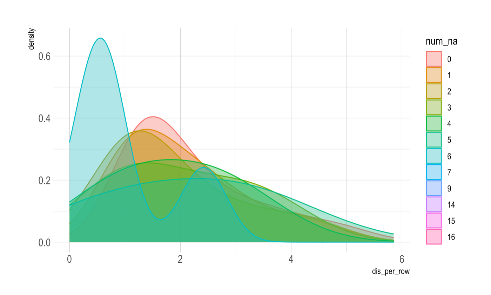

Firstly, I’m Sabri and I graduated from Bogazici university department of economics in 2020. After the graduation, I started to work in the investment office of the Presidency of Republic of Turkey and I have been working here for almost two years as an Analyst.Even if I am dealing with some data process like FDI report and some sector analysis in Turkey in my job, I want to go deeper into data science and work in the more sophisticated and technical job that related to in that area.Therefore I started to Big Data Analytics master program at MEF university.In this sense, despite the fact that until the university I had no idea and any information about this area but some courses that I took in the university and some online bootcamps in the coursera and udemy like platforms bring my knowledge to some level, so with this master program I hope to achive enough proficiency to start a good job in this field.
3.1 Wenxi Zhang - k-means clustering usage in datasets with missing values
This content from Wenzi Zhang who graduated from Columbia University. She aim to utilize a modified K-means algorithm to handle data with missing values.
K-means clustering is a very popular type of unsupervised learning and it is a clustering method that aims to partition n observations into k clusters in which each observation belongs to the cluster with the nearest cluster centroid and used commonly in machine learning models.
K means Clustering
However, the standard K-means algorithm fails to accomodate data with missing values. This modified k-means algorithm below takes missing values into account. When calculating the sum squared error of each data point to the centroid, we only consider the partial distance with entries with non-NA values. This innovation in the algorithm could be beneficial for large sparse datasets with missing values, especially for datasets of recommendation systems.

4 3 R POSTS RELEVANT MY İNTEREST
4.1 Downloading Data Using Quantmod Package in R
Quantmod provides a very powerful function for downloading financial data from the web. This function is called getSymbols. The getSymbols() method sends a request to download and manage data from public sources or local data. It is necessary to pass some parameters within this method to make the desired request. The first argument of this function is a character vector specifying the names of the symbols to be downloaded. Then you can specify the source from which you want to get the data.
The quantmod package is capable of downloading data from a variety of sources. The current supported sources are: yahoo, google, MySQL, FRED, csv, RData, and oanda. For example, FRED (Federal Reserve Economic Data), is a database of 20,070 U.S. economic time series ().
Example: USD/EUR exchange rates from Oanda
library('quantmod')
Zorunlu paket yükleniyor: xts
Zorunlu paket yükleniyor: zoo
Attaching package: 'zoo'
The following objects are masked from 'package:base':
as.Date, as.Date.numeric
Zorunlu paket yükleniyor: TTR
Registered S3 method overwritten by 'quantmod':
method from
as.zoo.data.frame zoo
getSymbols(Symbols ='USD/EUR', src ='oanda')
[1] "USD/EUR"
Here we have loaded the data for USD/EUR from the Oanda API which provides free currency data. The getSymbols() method doesn’t return any output. Instead, it creates an internal object in the Global Environment which in this case is the USDEUR object. The data object is an “extensible time series” (xts) object.
4.2 The Power of mutate( ) for Data Wrangling in R
mutate() is a dplyr function that adds new variables and preserves existing ones. That’s what the documentation says. So when you want to add new variables or change one already in the dataset, that’s your good ally. Given our dataset df , we can easily add columns with calculations.
4.3 A simple introduction to ggplot2 (for plotting your data!)
Data visualization is a powerful tool for scientists and their audiences to easily grasp relationships and trends in data. Some of you may already know how to generate plots using base R. In this blog post, we’re going to introduce a package called “ggplot2” that makes it more intuitive to create consistently nice-looking figures in R.The “gg” part of “ggplot2” stands for the grammar of graphics. Just like sentences are composed of various parts of speech (e.g., nouns, verbs, adjectives) that are arranged using a grammatical structure, ggplot2 allows us to create figures using a standardized syntax.
Let’s load up a data set that comes built into R, called ChickWeight
Once you figure out how you want to map your data to aesthetic elements, then you present your data using a geometric object, like a scatterplot, boxplot, lineplot, etc.
Concept of ggplot
AN EXAMPLE
library("ggplot2")ggplot(ChickWeight, aes(x = Time, y = weight)) +geom_point(aes(color = Diet))

 ).
).